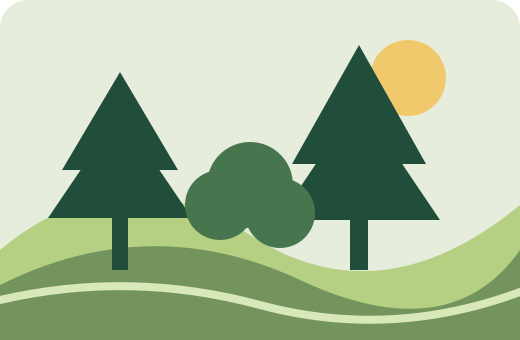

Prestação de contas
Impacto e transparência
Impacto ambiental precisa ser compreensível, verificável e apresentado sem promessas que não possam ser comprovadas.

Confiança também faz parte do impacto.
Cliques, mudas adquiridas, árvores plantadas e árvores sobreviventes são medidas diferentes. Uma comunicação responsável explica cada etapa e publica fontes para os números apresentados.
O que queremos acompanhar
✓ Participações validadas
✓ Mudas destinadas ao plantio
✓ Locais e datas das ações
✓ Sobrevivência das mudas e manutenção
Indicadores que fazem sentido
| Indicador | O que significa | Evidência necessária |
|---|---|---|
| Participações | Interações válidas registradas | Registros auditáveis e período |
| Mudas plantadas | Mudas efetivamente colocadas em campo | Relatório do parceiro, local e data |
| Sobrevivência | Mudas vivas após período definido | Monitoramento de campo |
| CO₂ | Estimativa de carbono, quando aplicável | Metodologia e premissas públicas |